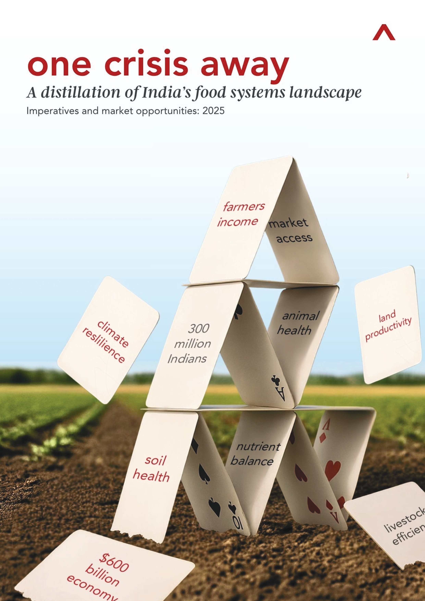
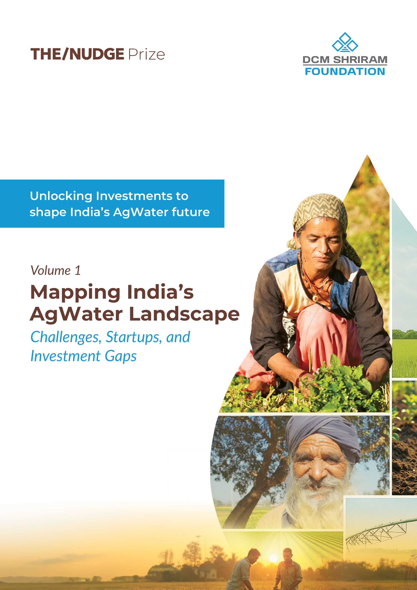
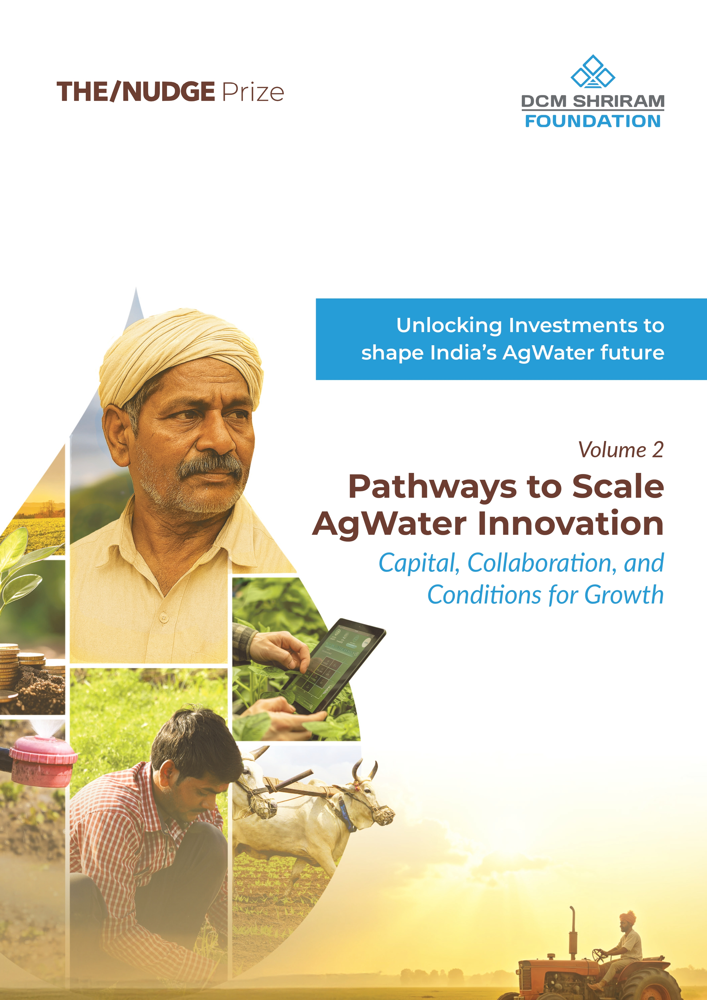
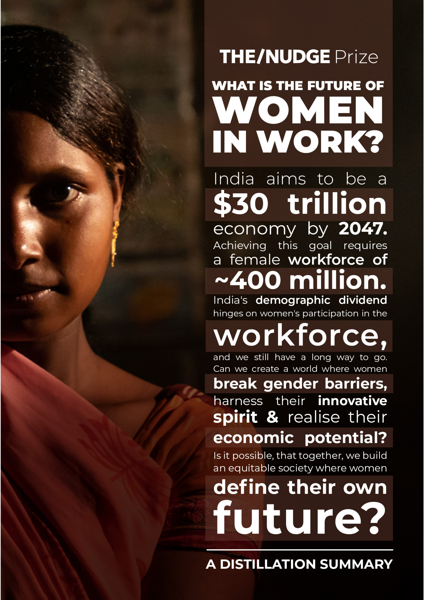

The climate vulnerability of 300M+ Indians and the potential of tech-enabled market innovations to build food-system resilience
View Report
Part 1 of an investment POV mapping India's AgWater sector, its challenges, active startups, and investment gaps
View Report
Part 2 of the investment POV, laying out pathways for the ecosystem to scale innovation in the sector
View Report
Key action areas to raise India's female labour force participation, a lever for the $30 trillion economy goal by 2047
View Report